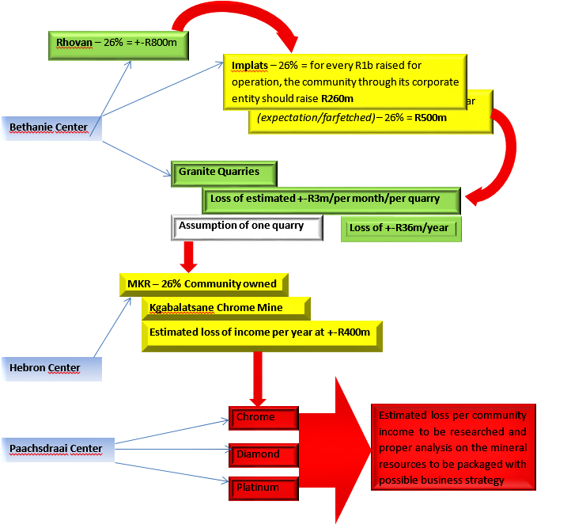
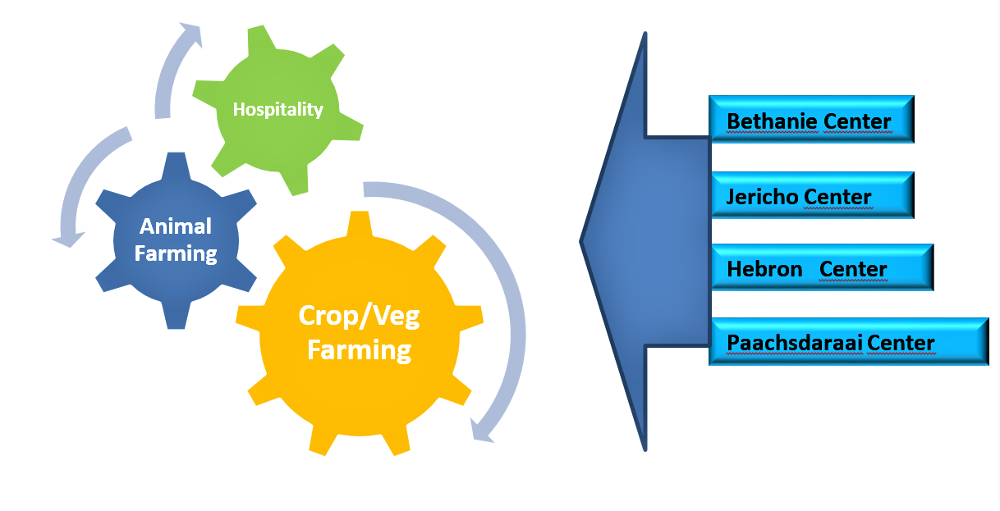
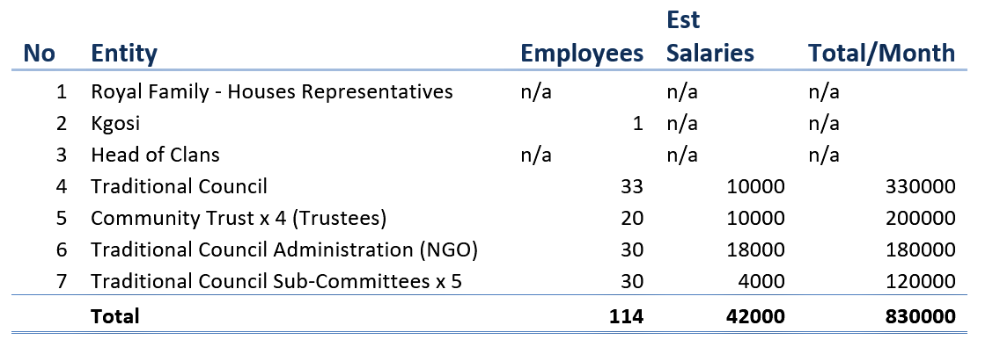
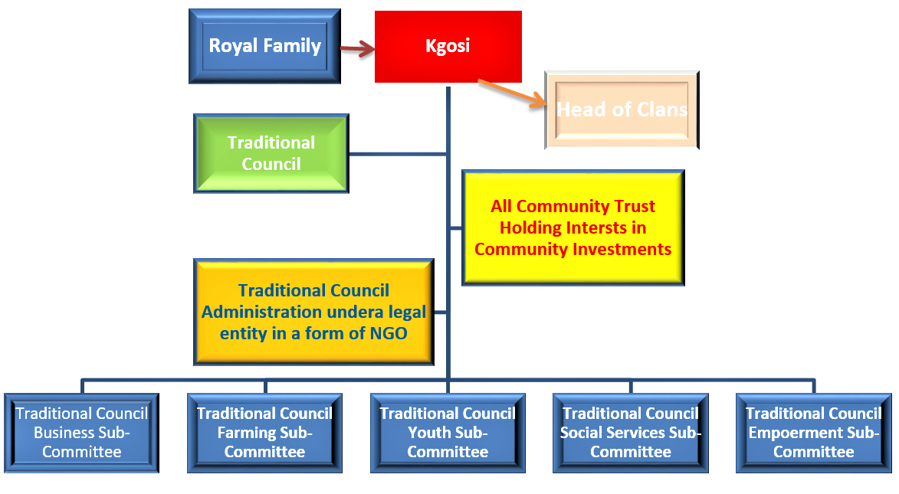
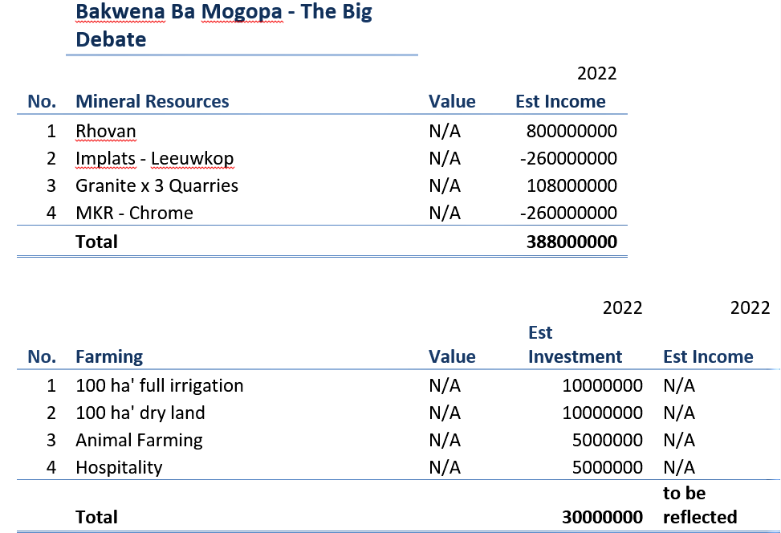
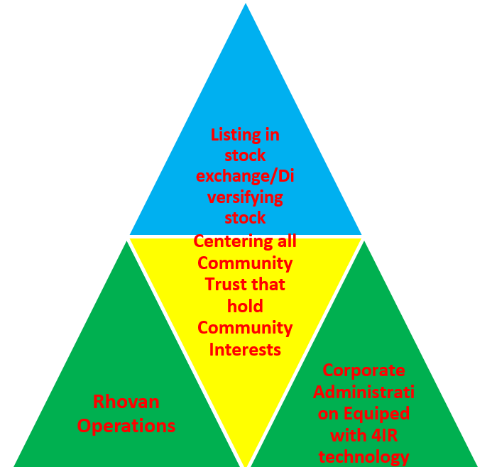
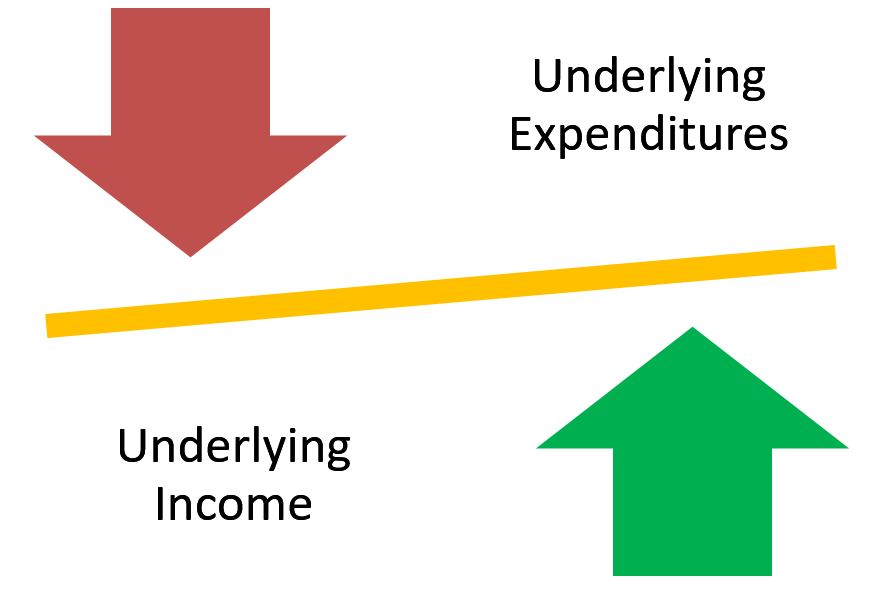

Our Community & Challenges
Here is some information about our community and some of the challenges faced by the community
- Covid-19 is one but a serious challenging factor to all of us in the world. This has forced industries to adjust to what is referred to be a new normal, whether it is or not is another question altogether.
- The reality is we are all must adjust to living with the changing technology, in particular accepting the 4IR (fourth industrial revolution) as the order of the day. By building this vehicle, we accept numerous factors that drive our lives including Covid-19, our failures, and the most important career-driven sector that includes Information Technology;
- This vehicle must first be seen as Bakwena Community Members as an important instrument for them to take a deep look into themselves;We must also acknowledge that we all live under the Constitutional Democracy, and we must understand the simple meaning of what it is before we go deeper.
- We must try to adhere to our Country’s Laws regardless. Where we feel a particular Law is unfair/unjust and or otherwise, we must follow due process of challenging it regardless of difficult it may seem.
Our Challenges
- The major income for the community is from our Rhovan Mine operation where we (The Community) own 26% of share value and participation. This operation is key to the Community while we acknowledge some challenges in the transaction imitating from participation at board level, management level, and operations. It will not be fair at this stage to put the current value of the Community in monetary value as we are still engaging with our partners to verify actual financials;
- The Impala partnership (Leeuwkop project) is not yet operational and in terms of our understanding the time has come to push for the operation to proceed in terms of our interest that will amongst others address procurement, employment, social development, and certainty to stability within the Community. Our view is that the project was closed procedural and should be reviewed with the intention to make sure that operations start the soonest.
- Granite operations are a huge challenge to the community fuelled by corruption and fraud. The community has through its entity founded as Bakwena Ba Mogopa Mineral Resources PTY Ltd secured Mineral Right (MR) with the DMRE. The company was later, unprocedural changes to operating as Bagopa Granite PTY Ltd that benefits only kgosi. Numerous engagements were lodged with the DMRE (The Department of Minerals Resources and Energy) as the regulator without any success. Amongst others, we acknowledge illegal mining in various areas in our properties by kgosi. The Community is losing to a tune of around R3m (Three Million Rand) per month per illegal operations to this day and the DMRE is reluctant to play its legislative role to fix this challenge.
- Chrome Minerals benefits are lost due to various reasons, amongst others instability and land grabbing happening in the Hebron Center. The lucrative Mining venture is unable to proceed as it is frustrated by community members and corrupt municipalities.
- Farming properties are currently spearheaded by local community farmers who are not getting any support either from us the Community, Private Companies, and or Government. In this case, we hope that all parties should review their positions in participating fully in making this industry viable to all. Most opportunities are missed by all, from the farming community to ordinary laborers and the Country at large. We should also note that this is the sector that is responsible for food security in the country if not in the Continent.
- Land taxes are lost due to a lack of sound administration. We are losing Hundreds of Thousands of Rand on land taxes alone every year. From servitudes, Business rentals, residential and etc.
- For the year 2020, the Community has lost around an Rb+ (Billion Rand Plus) in possible share dividends in all these lucrative projects. These figures can be easily quantified
Public Document
High Level Document
1. Introduction:
Challenges facing the Bakwena Ba Mogopa into managing and growing their economic activities should be attended swiftly.
The first step is to make sure that we are represented into our Rhovan-Bakwena operation, and below you will understand why.
Once this is achieved, we can then move into other areas.
All organisations, being it Corporates, Companies, Churches, Politics have their internal differences all over the world;
this does not exclude the Bakwena Ba Mogopa Traditional Community;
(We must all acknowledge that this also goes for us as the community before we can even engage into dialogue on this matter)
When the new Mineral and Petroleum Act came into effect, companies were forced to change from old order rights to new order rights;
this resulted into companies applying and satisfying the DMRE requirements as per the new Act;
Black people, and in particular Black Communities should not shy away from basic facts that led to the relevant Acts being satisfied when converting/applying for the New Rights,
which amongst others but not limited to include Mineral and Petroleum Resources Development (MPRD) Act and Broad Based Black Economic Empowerment (BBBEE) Act;
The above par deals in particular with the transformation of the apartheid practices; and the two legislations were mainly drafted with the intention to develop what is known or referred to as transformation of the previously disadvantaged communities in order to balance the economic benefit of the people of this country;
The conversion to new “order rights” are now becoming old as referred above and we are still not seeing the economic benefits, but then again the Community should take responsibility.
Mediocracy cannot be left unchallenged and if the “community” can allow this to happen, the status que will remain for the coming hundred years. Our conscience as community members should be challenged, not only for the coming generation but for our benefits as well.
The fact that this Glencore/Implats transaction was also challenged by some of the community members during its inception says a lot, and without going into details of challenging the facts that were raised then, here we are as the “Community” finding ourselves into this mess;
We must advocate to choose our battles and accept certain things that we did not agree on in the past, thus we accept this transaction as is, however, if needs be, we will go back and challenge it by stating facts. Some of the community members were arrested when this transaction was negotiated, and some of the issues they were raising at that time are now coming to play.
Planning can be done in different ways, on this one we are advocating for Short Term Solution which will result into the Medium Term Solution.
We are in agreement that the Long Term Solution should be the Trust, however, as long as litigation is prolonged, then we are bound not to participate.
2. Far Fetched Community Income per Unum – Minerals:
The following figures are estimates made on assumptions based on far-fetched informal report from Glencore. Proper estimates can only be made once the community can participate from board level, management level, and other strategic positions.
At this stage, the community could have been negotiating to up their participation into our operations to increase share ownership;

The Bakwena Ba Mogopa Traditional Community is losing an estimated minimum loss of share dividends at not anything less than R2b per year in potential and operational mining/mineral resources. In terms of this document, this is estimated at minimum share estimate.
This draft excludes potential procurement/employment/social and labour plan benefits to be directed to locals.
3. Far-fetched Community Income per year – Farming “Animal and Crop”

Without making reference of all our current resources that we can use for the above investments, it is proper to take a good look into ourselves on what we are losing. Farming is one critical area that can be exploited and again, we are looking away.
A short term goal to make this work can be advised internally, this will also safe costs. A total of about R30m can bring proper investment into our community.
Our resources can be used to fund a business model that can be put in place to better the lives of the Bakwena Ba Mogopa Traditional Community; alternatively finds can be raised to establish a proper working investment(s) in this regard.
The greatest benefits to all these will grow the community balance sheet, maximum share dividends for the community, creating and sustaining entrepreneurship, creation of employment through community structures and businesses.
Remember, all community structures are not remunerated because there are no funds.
4. Sound, working Community administration:
I will not dwell too much into this, but fact is, as long as the community does not have proper administration, we can forget about all our dreams.
The Traditional Community strength lie on sound administration and this should be done separating lines of accountability and not going against the governing Act.
The following structure addresses different challenges, which include and does not limit to proper services, eradicating unemployment, and business/entrepreneurial support, social and corporate services.
Our view is that kgosi does not want to see this happening because he want absolute power and as long as this is not done and addressed as a primary factor, our challenges will remain. Since the Traditional Council inception, this plan has been sabotaged.
Remunerated and accountable positions may address employment as follows:

In terms of our rough estimates, for Community Administration, a proper budget may be developed for all structures of the Community. About R1.5m/per month may be budgeted and approved to make sure that all structures are economical and rendering services.
This budget is rough estimate done in minimum fees/expenditures; however the structure will be liable to perform and render services that are estimated to bring around R2b/per year. If we compile a proper structure, this may give us indication of percentage (%) budget and expenditure with appropriate Expected Income.
Remember, we are deprived of this and this is a simple model to can compile. A detail model requires reasonable budget and may be developed within two (2) months internally. Also, other fees are done on average in net/gross total.
Remember that the estimates above are done with minimum estimates, meaning that more than 114 people will be employed by direct Community Administration and more will earn salaries.
The structure guarantee that a proper model can secure more than 150 people in employment in 2022 once a proper Business/Administration Model can be developed. And this model will guarantee more local businesses to trade and secure returns.
The Bakwena Ba Mogopa Traditional Community need to wake up and smell the coffee, this is the time to be led by visionaries who want to be held accountable and earn remunerations, and not blind old people, however old people should be our light and moral compass.

In brief, these are the discussions we must engage on and not the challenges we finding ourselves addressing. We must be able to engage into the hardships of the past, the advantages and disadvantages of being a Traditional Community.
We must also be given an opportunity to criticize the kgosi, which in my personal view and the Traditional Council’s view is a liability to the Bakwena Ba Mogopa Community.
This must also allow the community to engage and criticize in view of building our nation/society.
5. Financial Prospects:

The above prospects can be worked on and illustrate bankable figures for our community. Our expectation is not for all to understand but to paint a faint picture of the good we have, the Bakwena Ba Mogopa Traditional Community is sitting on “gold” for lack of the better wording
If a proper Business Plan for this community could be made, in 2023, this community could see returns in Billions of returns per year in just the above investments.
It can also eradicate unemployment by estimated +-60% to the current stats; we need to change how we think and start to use our own local owned companies and services to build sound foundation before we consider foreign companies that failed us and robbed us of Millions of Rands.
Socio economic planning can also address bursaries of community members, sports capacity and etc.
Entrepreneurship could result into some of the people becoming millionaires. All this can only be achieved through proper planning and “UNITY”
6. In Conclusion:
Basic questions should be asked?
- What should be done?
- When?
- How?
- Address our issues immediately and address the Rhovan representation, community must take over their seats to drive this process;
- Immediately
- By making sure that we take what is ours immediately, by addressing a) above. The Traditional Council is still lobbing other organisations to make sure that all these matters are addressed. This must be done within this coming two (2) weeks, failing which, drastic actions should be taken. Our due date is the 19th March 2021.
Remember, all these are just a tip of the ice burg. We can do more if work (the Community) work together, the document did not reflect other incomes from land taxes and others.
“And the day came when the risk to remain tight in a bud was more painful than the risk it took to blossom.” – Anaïs Nin
7. Implementing the plan:
The Community must acknowledge that the foundation to do anything lies solely on the Administration Structure that is accountable and that should operate where accountability is key.
This means that lines of operations and accounting must be the basic critical factors when working on the structure.
The community cannot do that in the general Community meeting because of basics assumptions, this must be done by a competent personnel who understand the behaviour of the Community, the History, the Behaviour, The Basic Governing and relevant Laws/Acts.
The Community Plan has taken into account some of the most vital factors as follows:
- Government behaviour and challenges;
- Service delivery
- Political influence
- Political deployments and competence
- General Community behaviour;
- Career driven peopley
- Social and caring factors to be properly governed (Social Investment)
- Governing Laws;
- Northwest Traditional Governance and Leadership Act
- Traditional Leadership and Khoisan Act
- Trust Act
- Public Finance Management Act
- Policy “still to be developed”
Below is the graph that deals with short, medium and long term goals.
From the bottom, immediate plan/solution, center reflects medium plan/solution and top reflects long term goal/solution.
The structure must address key principal issues, namely:
- Senior Traditional Leader’s/Traditional Councillor’s behaviour by design and or by default
- Reviewing of Trust Deeds (Governing documents of different Trusts)
- The term of the Traditional Council – the behaviour of government and corporate on this matter
- Community resources & debts
- A suitable local personnel/official/company who will construct the detailed model of the above and below structure, “The Business Plan”

The most important notes must be reflected as follows:

Underlying expenditures include but not limited to:
Professional Services, i.e. attorneys/legal/counsel fees, accounting fees, consultants’ fees, movable assets, petrol/diesel, electricity bills and connections and etc.
Underlying income includes but not limited to:
Land taxes, small business taxes/levies, servitudes, traditional fines/taxes, stand fees, burial rights and etc.
Our Community
Our Agenda
Since 1994, we (The Bakwena Ba Mogopa Traditional Community) must acknowledge that pieces of legislation that were put in place by the government were not realized to benefit the community, South Africans, Africans, and the world as it should;
Certain keys to realizing economic dream must include proper leadership, community support, and unity with the first step of setting up corporate administration that will amongst others address youth development, business development, and growing the country’s economy;
If only the community could rely on the government to pursue the dream, however, this will not work as long as the community does not realize that its strength is centered on its unity;
The government could be an important player in unlocking the full potential once the community can deal with and address its challenge that is centered around unity and proper leadership;